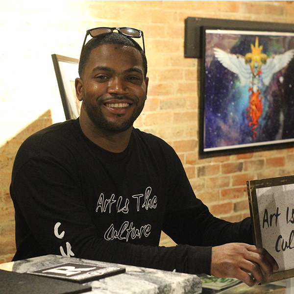

|  | Kamal Rhodes AKA I am The CuratorFounder of Art is The Culture |
Kamal Rhodes first dubbed the moniker "IamTheCurator"by using innovative concepts to the projects he is involved in, also by taking an artistic approach when it comes to Marketing, Design and Creating Timeless Memorable Events.
Having over 8+ years involvement in Marketing & Design, Kamal most notable achievements are establishing creative arts platform "Art Is The Culture", 3 Article Publications from Media Outlets WHYY, METRO Newspaper and Enspire Magazine (Pgs. 28-29), Produced and Co-Directed Music Video Project for Grammy Nominated Music Artist Young Chris and Marketing Director for Hair Mania Tour taking place at the Legendary Philadelphia MET.
| Marketing | ⭐⭐⭐⭐ | Event Coordination | ⭐⭐⭐⭐⭐ |
| Photography | ⭐⭐ | Videography | ⭐⭐⭐⭐ |
| Graphic Design | ⭐⭐⭐⭐⭐ |
| Dates | Company | Job Description |
|---|---|---|
| 2010 | Art Is The Culture | Marketing and Event Coordinator |
| 2012 | Philadelphia Picture Company |
Photographer |